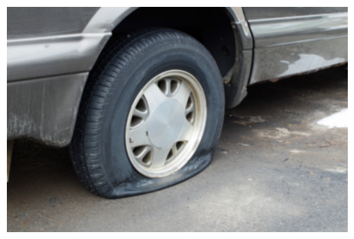
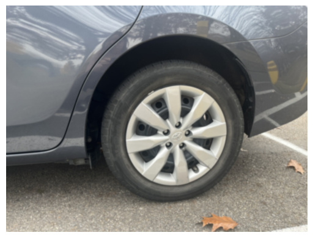
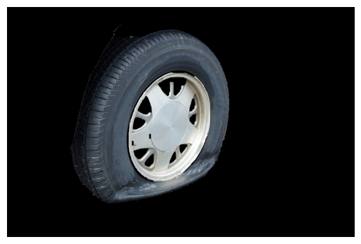
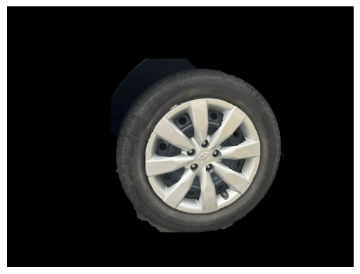
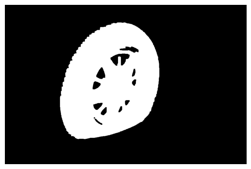
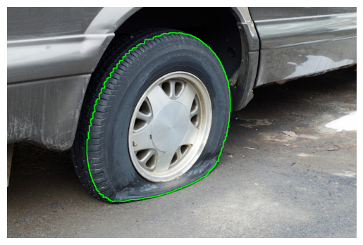
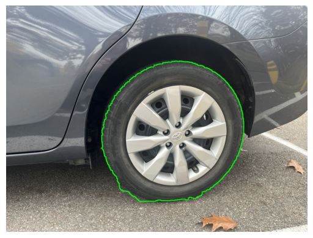
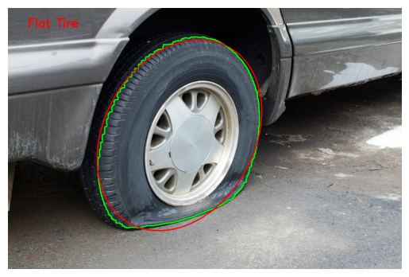
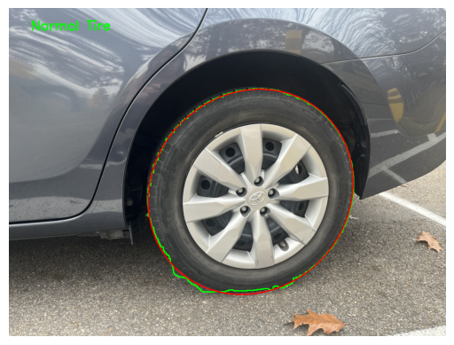

Interim Report: Distinguishing Between Flat Tire and Normal Tire Using Computer Vision
Dallas - Sydney Tang - Nov 18,2024
Introduction
The objective of this project is to distinguish between flat and normal tires by analyzing their shape from a given image. Using computer vision techniques, the tire’s contour is extracted and compared with its ideal elliptical shape. The degree of deviation between the two shapes serves as the basis for classifying the tire’s condition. This report explains the approach, provides a detailed code breakdown, and discusses future improvements for the project.
Code Breakdown
-
Image Preprocessing
The input tire image is smoothed using Gaussian blur to reduce noise and improve the effectiveness of segmentation.
Code:# Read the image and apply Gaussian blur image = cv2.imread('img/rgb/001058.jpg') blurred = cv2.GaussianBlur(image, (7, 7), 0)Example Output (Blurred Image):

 -
Foreground Segmentation Using GrabCut
The GrabCut algorithm separates the tire (foreground) from the background using a manually defined rectangle.
Code:# Define rectangle and apply GrabCut rect = (50, 50, image.shape[1] - 400, image.shape[0] - 100) mask = np.zeros(image.shape[:2], np.uint8) bgdModel = np.zeros((1, 65), np.float64) fgdModel = np.zeros((1, 65), np.float64) cv2.grabCut(blurred, mask, rect, bgdModel, fgdModel, 5, cv2.GC_INIT_WITH_RECT) mask2 = np.where((mask == 2) | (mask == 0), 0, 1).astype('uint8') foreground = image * mask2[:, :, np.newaxis]Example Output (Segmented Foreground):

 -
Binary Thresholding and Morphological Cleaning
The foreground is converted to grayscale, thresholded, and cleaned using morphological operations to ensure a smooth tire shape.
Code:# Convert to grayscale and apply threshold gray = cv2.cvtColor(foreground, cv2.COLOR_BGR2GRAY) blurred = cv2.GaussianBlur(gray, (7, 7), 0) _, dst = cv2.threshold(blurred, 40, 255, cv2.THRESH_BINARY) # Morphological operations to clean the mask kernel = cv2.getStructuringElement(cv2.MORPH_RECT, (5, 5)) morph_dst = dst.copy() for _ in range(3): morph_dst = cv2.morphologyEx(morph_dst, cv2.MORPH_OPEN, kernel) morph_dst = cv2.morphologyEx(morph_dst, cv2.MORPH_CLOSE, kernel)Example Output (Cleaned Binary Mask):


-
Contour Detection and Ellipse Fitting
The largest contour is extracted, and a minimum enclosing ellipse is fitted around it to analyze the tire's shape.
Code:# Detect contours and fit an ellipse contours, _ = cv2.findContours(morph_dst, cv2.RETR_TREE, cv2.CHAIN_APPROX_SIMPLE) largest_contour = max(contours, key=cv2.contourArea) contoured_image = image.copy() cv2.drawContours(contoured_image, [largest_contour], -1, (0, 255, 0), 2) if len(largest_contour) >= 5: min_enclosing_ellipse = cv2.fitEllipse(largest_contour) cv2.ellipse(contoured_image, min_enclosing_ellipse, (0, 0, 255), thickness=2)Example Output (Contour and Fitted Ellipse):

 -
Shape Analysis and Classification
The intersection and union between the contour and ellipse are computed. Based on the normalized symmetric difference area, the tire is classified as "Flat Tire" or "Normal Tire."
Code:# Create masks and compute intersection/union contour_mask = np.zeros(image.shape[:2], dtype=np.uint8) ellipse_mask = np.zeros(image.shape[:2], dtype=np.uint8) cv2.drawContours(contour_mask, [largest_contour], -1, 255, thickness=cv2.FILLED) cv2.ellipse(ellipse_mask, min_enclosing_ellipse, 255, thickness=cv2.FILLED) intersection = cv2.bitwise_and(contour_mask, ellipse_mask) union = cv2.bitwise_or(contour_mask, ellipse_mask) intersection_area = np.sum(intersection == 255) union_area = np.sum(union == 255) symmetric_difference_area = union_area - intersection_area # Classify based on normalized symmetric difference area if (symmetric_difference_area / union_area) > 1 / 16: print("The tire might be deflated") cv2.putText(contoured_image, "Flat Tire", (50, 50), cv2.FONT_HERSHEY_SIMPLEX, 1, (0, 0, 255), 2, cv2.LINE_AA) else: print("The tire is properly inflated") cv2.putText(contoured_image, "Normal Tire", (50, 50), cv2.FONT_HERSHEY_SIMPLEX, 1, (0, 0, 255), 2, cv2.LINE_AA)Example Output (Final Classification Result):


Future Directions for Improvement
-
Automation of Manual Adjustments
- Automate the selection of the rectangle for the GrabCut algorithm and dynamically determine thresholds, such as the symmetric difference threshold, based on image properties. This reduces reliance on user intervention and makes the system more adaptable.
-
Encapsulation and Modularity
- Refactor the current pipeline into a structured format with reusable functions or classes. For example, creating a
TireDetectorclass with methods for preprocessing, segmentation, and classification would improve code maintainability and scalability.
- Refactor the current pipeline into a structured format with reusable functions or classes. For example, creating a
-
Real-World Robustness
- Address variability in real-world conditions, such as changes in lighting, different tire patterns, and camera angles. This could involve integrating advanced preprocessing techniques or more robust algorithms to handle distortions and variability.
-
Integration with Machine Learning
- Train a supervised learning model using a labeled dataset to classify tire conditions. Machine learning would allow the system to adapt to diverse tire designs and environmental conditions, improving accuracy.
-
Integration with Other Automotive Repair Detection Methods
- Extend the system to detect other common vehicle issues, such as dents, cracked windshields, and scratches. By integrating these capabilities, the system could become a comprehensive diagnostic tool for assessing overall vehicle condition.
-
Incorporating Repair Time Estimation for Auto Body Shops
- Add a feature to estimate the time required for repairs based on detected issues. This could assist auto body shops in scheduling and resource allocation, providing additional value for professional use.